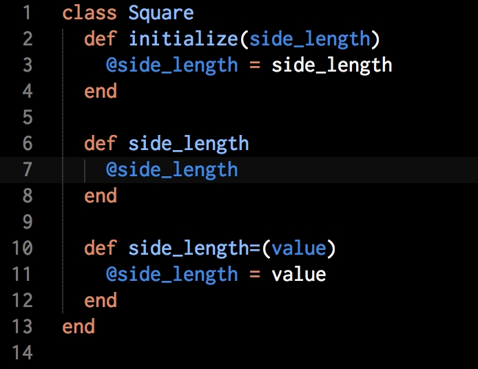

Classes, Objects, and Variables
June 18 2015
"Ruby is a perfect Object Oriented Programming Language. Everyting in Ruby is object."
Object orientention is not only development style. If you look around you'll see objects are everywhere: your car, your dog. And every objects has state and behavior. Take for example dog: state(name, color, breed) and behavior (barking, fetching). So for every objects which you see ask yoursefl two questoins: "What possible states can this object be in?" and "What possible behavior can this object perform?".
Let's start from example. We created class SquareWhat we did in this example
- The
class - The
initialize must contain aninitialize @side_lengthis an object variable. Similar to the keys of a hash. The@sign distinguishes@street Square, this object will contain a@side_lengthvariable.
Let's create a new instance of
class Square.Getter and Setter methods
Ok. Now we have class Square and already created instance of this class. But what if you want now read or rewrite side_length. How we can do this. For this purpose we need getter and setter method.

But making our code more elegant we can use attr_reader and attr_writer in Ruby.
attr_reader is a getter which means that it just returns a value or state outside of the class, but does not change it.
attr_writer is a setter which means that you can change the value of the variable outside of the class, but it is not readable.
Methods
Inside ourclass Square we already have method initialize. Now we will add method area and method perimetrAll of this methods are objects methods.